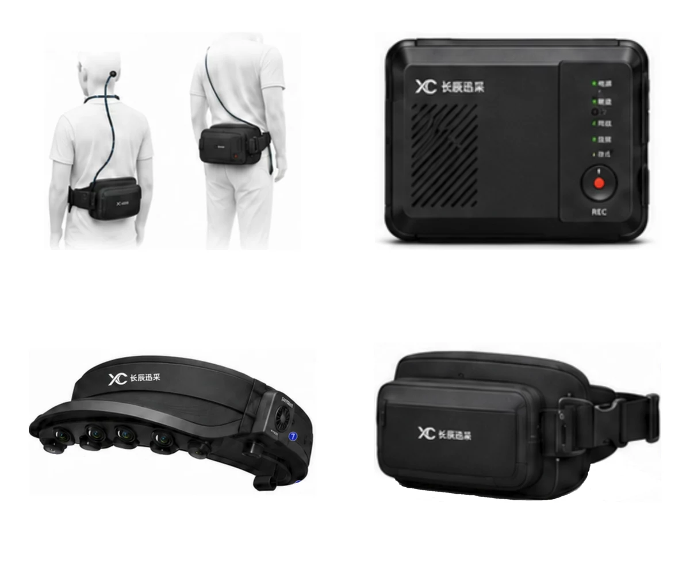
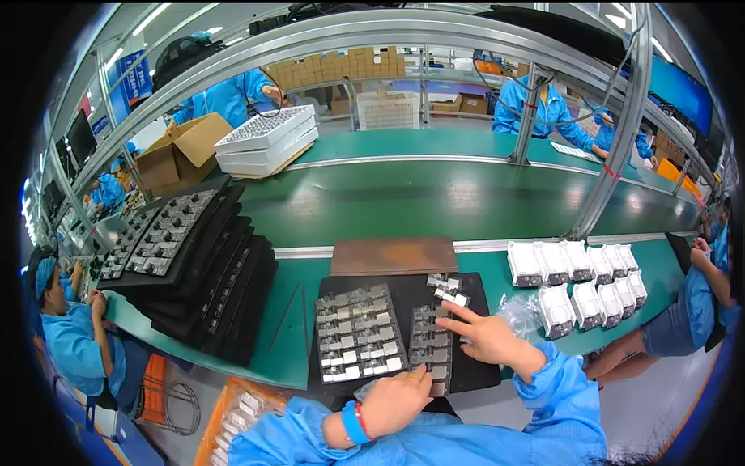

Cost-efficient scaling
Deploy collection projects across factories, homes, retail and logistics without relying on large fleets of expensive robot bodies.
Body-free embodied AI data collection agency
All-industry real-world data collection with EGO, UMI, multimodal synchronization and fine annotation to support scalable body-free data collection.
Industry Bottleneck
Model capability is moving fast, but action trajectories, visual observations, hand-object relations, task semantics and synchronized real-world data remain scarce. Body-free collection turns human operation into scalable robot priors.
Deploy collection projects across factories, homes, retail and logistics without relying on large fleets of expensive robot bodies.
Capture human operation and environmental interaction in the real world to reduce the Sim2Real gap left by synthetic data.
The deliverable is not just video. It is a data asset with vision, speech, action and semantics.

Company Solution
XUNCAITEK serves robotics companies, embodied foundation model teams and research institutions with real scenes, wearable capture, multi-device time sync, detailed annotation, QA review and dataset packaging.
How It Works
Standardize real task environments across factories, homes, retail, food service and logistics.
First-person views, multi-camera video, motion capture, data gloves and VR/AR equipment.
Align multi-camera and multi-sensor streams with unified timestamps for sequential training data.
Segment actions, label objects, encode task semantics and record success, failure and anomalies.
Package, validate and update datasets in mainstream VLA formats or customer-defined schemas.
Scene Network
With stable factory channels and project coordination capability, the company can rapidly connect and replicate collection scenes based on customer requirements.
EGO Sample Library
First-person capture samples from production, service, agricultural and household tasks show the physical detail needed for embodied AI training data.
Examples for display only. Selected samples are desensitized and do not disclose complete customer deliverables.

The gallery preserves occlusion, lighting, hand-object contact and workflow variation from real work sites.
Completed Projects
Photos are used only to show collection staff wearing devices in completed project environments.
Delivery Standard
Fields cover RGB video, frame IDs, camera parameters, hand trajectories, keypoints, action phases, contact states, object classes, natural-language instructions, anomaly clips and QA records.
Advantages
Co-build
XUNCAITEK looks forward to working with robotics companies, embodied model teams, research institutions, scene partners and local industry ecosystems to build benchmark datasets for industrial, home and commercial robots.